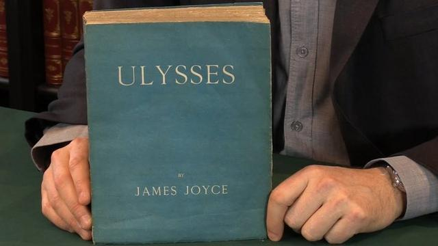

● 为什么选择 Ulysses？
如果你经常书写长文，那么 Ulysses 绝对是你的不二选择，灵感涌现时只需要在键盘上将文字敲下，享受输入的快感即可，输出的感受会让你感到舒畅。基于文件夹的管理方式也让文稿清晰有条理，不同的内容分门别类进行归纳，新增的同步外部文件功能更是如虎添翼，将写作这件事做到极致。 随着手机尺寸的不断进化，在手机上码字也变得常见且轻松，Ulysses 对 iPhone 的支持，也让它成为移动端非常理想的写作工具，我们可以在手机上浏览已经写好的文章；对文章进行修改与二次创作；将文字分享给朋友一起查阅等等，随时随地都能进行创作。
● Ulysses是如何诞生的？
创始人Max从小学开始学习编程，大学专攻计算机科学与技术专业，后来放弃了攻读博士的机会，毕业后，与搭档 Marcus 投身 Ulysses 开发事业。Ulysses团队目前有 19 名成员，主要部门有技术开发部，设计营销部及用户支持部门。
在 2002 年的时候，Marcus 想写小说，但找不到合适的工具。 当时所有可用的写作软件似乎都是为文员而非作家设计的。 以无所不在的文字处理软件 Word 为例：它适合制作商务信函，但不适用于像创作小说这样的大型项目。那时还在一家网络公司担任设计师的 Marcus 便提出了想要设计一款更好的写作软件的想法，这款软件可以提供让人专注高效的书写环境并能对作品完成情况进行追踪统计。那时互联网上还流行邮件列表，Marcus 通过邮件列表寻找能接管这项工作会编程的人。 当时还在读高中的Max参与了进来， 一切就这么开始了。
● Ulysses 的名字来自一本小说，二者之间的联系是什么呢？
Ulysses 是詹姆斯乔伊斯的小说。 在欧洲，Ulysses 就算不是 20 世纪最重要的小说，也一定是最重要的小说之一。

着手 Ulysses 这个项目时，创始团队的野心不止于只是做一款写作工具，甚至想过要让 Ulysses 努力成为世界上最好的写作软件。 Ulysses 这个名字不仅代表着最好的小说，它也可以成为最好的小说写作工具的代名词 。
另外，Ulysses 是希腊神话中英雄奥德修斯（Odysseus）的罗马名字。正是他的聪明才智，使他成功地渡过了无数次历险。 这是一个很有意思的比喻： Ulysses 能让作家渡过写作这一历险，最终孕育出成功的果实。
● 作为一款基于Markdown语言的文本编辑器，该如何快速上手呢？
使用 Markdown 要比使用富文本编辑器容易得多。由于 Word 在很长一段时间占主导地位，因此人们已经习惯它了。
在 Ulysses 中，不必处理文本格式，只需在文本中标记少量且容易记忆的符号即可。这样编辑文本的好处是用户可以更好地专注于写作。仅在之后用户需要创建导出文档时，这些字符才会被诠释出来。例如，标题加粗并用较大字体显示。
新手们不必担心，因为在 Ulysses 中有一个「介绍」的标记面板，里面概述了基本功能的使用情况，可以调出来作为参考。在 iPad 和 iPhone 上，用户可以通过键盘上放的两个按键访问标记字符。对于某些文本，用户甚至不需要突出显示，只需撰写自己文字就好，不必学习任何快捷方式。在 Ulysses 中，Markdown 的使用是为了达到无干扰写作的，而不是为了为了掌握而使用。很多用户在习惯了这种写作模式后，可以快速高效的工作，且不想再采用回原来的写作模式。
● Ulysses 是如何做到不让文稿丢失的？
Ulysses 是一个基于库的 app。用户可以将所有文本都储存在文库中。在该文库中，有一个 iCloud 文件夹。只要激活，里面的文本还将自动同步到用户所有的已连接设备。只要连接网络，文本就会被保存到云端。即使电脑突然死机，也不用担心文稿丢失。同时这也实现了随时在任何设备上访问所有的文本。关键是无需进行任何设置，也不必启动同步选项，它会自动运行。